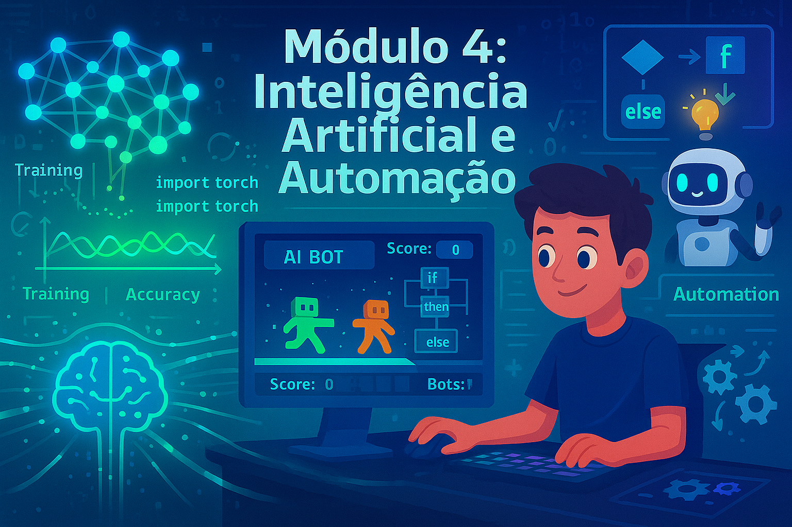

Crie bots inteligentes e aprenda os fundamentos de IA aplicada a jogos
Este é o módulo mais empolgante! Você vai dar vida a personagens e criar bots que pensam e tomam decisões sozinhos. Vamos explorar desde lógica condicional simples até redes neurais básicas.
Inteligência Artificial (IA) é quando fazemos programas que conseguem "pensar" e tomar decisões como se fossem inteligentes. Não é mágica - é matemática e lógica muito bem organizadas! Exemplos no dia a dia:
Vamos criar um bot simples que toma decisões baseadas em regras:
import random
class BotJogo:
def __init__(self, nome):
self.nome = nome
self.vida = 100
self.energia = 100
self.posicao_x = 0
self.posicao_y = 0
def analisar_situacao(self, inimigo_proximo, vida_baixa, energia_baixa):
"""Bot decide o que fazer baseado na situação"""
if vida_baixa:
return "buscar_cura"
elif energia_baixa:
return "descansar"
elif inimigo_proximo:
if self.vida > 50:
return "atacar"
else:
return "fugir"
else:
return "explorar"
def executar_acao(self, acao):
print(f"{self.nome} decide: {acao}")
if acao == "atacar":
dano = random.randint(10, 30)
self.energia -= 10
print(f" Ataca causando {dano} de dano!")
elif acao == "fugir":
self.energia -= 5
self.posicao_x += random.choice([-1, 1]) * 2
self.posicao_y += random.choice([-1, 1]) * 2
print(f" Foge para ({self.posicao_x}, {self.posicao_y})")
elif acao == "buscar_cura":
self.vida += 30
self.vida = min(100, self.vida)
print(f" Busca cura. Vida agora: {self.vida}")
elif acao == "descansar":
self.energia += 25
self.energia = min(100, self.energia)
print(f" Descansa. Energia agora: {self.energia}")
elif acao == "explorar":
self.posicao_x += random.choice([-1, 0, 1])
self.posicao_y += random.choice([-1, 0, 1])
self.energia -= 2
print(f" Explora para ({self.posicao_x}, {self.posicao_y})")
# Simulação
bot = BotJogo("RoboWarrior")
for turno in range(10):
print(f"\n--- Turno {turno + 1} ---")
print(f"Vida: {bot.vida} | Energia: {bot.energia}")
# Simular condições
inimigo_proximo = random.choice([True, False])
vida_baixa = bot.vida < 40
energia_baixa = bot.energia < 30
# Bot decide e age
decisao = bot.analisar_situacao(inimigo_proximo, vida_baixa, energia_baixa)
bot.executar_acao(decisao)Vamos criar um adversário inteligente para o jogo da velha:
import random
def verificar_vitoria(tabuleiro, simbolo):
"""Verifica se o símbolo venceu"""
# Linhas, colunas e diagonais
for i in range(3):
if all(tabuleiro[i][j] == simbolo for j in range(3)):
return True
if all(tabuleiro[j][i] == simbolo for j in range(3)):
return True
if all(tabuleiro[i][i] == simbolo for i in range(3)):
return True
if all(tabuleiro[i][2-i] == simbolo for i in range(3)):
return True
return False
def ia_jogada(tabuleiro):
"""IA faz a melhor jogada possível"""
# 1. Tentar vencer
for i in range(3):
for j in range(3):
if tabuleiro[i][j] == ' ':
tabuleiro[i][j] = 'O'
if verificar_vitoria(tabuleiro, 'O'):
return (i, j)
tabuleiro[i][j] = ' '
# 2. Bloquear vitória do oponente
for i in range(3):
for j in range(3):
if tabuleiro[i][j] == ' ':
tabuleiro[i][j] = 'X'
if verificar_vitoria(tabuleiro, 'X'):
tabuleiro[i][j] = 'O'
return (i, j)
tabuleiro[i][j] = ' '
# 3. Jogar no centro se disponível
if tabuleiro[1][1] == ' ':
return (1, 1)
# 4. Jogar nos cantos
cantos = [(0,0), (0,2), (2,0), (2,2)]
cantos_livres = [(i,j) for i,j in cantos if tabuleiro[i][j] == ' ']
if cantos_livres:
return random.choice(cantos_livres)
# 5. Jogar em qualquer lugar livre
for i in range(3):
for j in range(3):
if tabuleiro[i][j] == ' ':
return (i, j)
# Jogo completo
def jogar_velha():
tabuleiro = [[' ' for _ in range(3)] for _ in range(3)]
def mostrar_tabuleiro():
print("\n")
for i, linha in enumerate(tabuleiro):
print(f" {linha[0]} | {linha[1]} | {linha[2]} ")
if i < 2:
print("---+---+---")
while True:
mostrar_tabuleiro()
# Jogada do humano
linha = int(input("Sua linha (0-2): "))
coluna = int(input("Sua coluna (0-2): "))
if tabuleiro[linha][coluna] != ' ':
print("Posição ocupada!")
continue
tabuleiro[linha][coluna] = 'X'
if verificar_vitoria(tabuleiro, 'X'):
mostrar_tabuleiro()
print("Você venceu!")
break
# Jogada da IA
ia_pos = ia_jogada(tabuleiro)
if ia_pos:
tabuleiro[ia_pos[0]][ia_pos[1]] = 'O'
print(f"IA joga em {ia_pos}")
if verificar_vitoria(tabuleiro, 'O'):
mostrar_tabuleiro()
print("IA venceu!")
break
else:
mostrar_tabuleiro()
print("Empate!")
break
jogar_velha()Machine Learning é um subcampo da IA onde algoritmos aprendem padrões dos dados sem serem explicitamente programados. Principais tipos:
Vamos criar um bot que aprende a classificar se um inimigo é perigoso ou não:
import random
class BotAprendiz:
def __init__(self):
self.conhecimento = {} # Padrões aprendidos
def avaliar_inimigo(self, nivel, arma, armadura):
"""Avaliar se inimigo é perigoso baseado em características"""
periculosidade = 0
# Calcular pontos de perigo
periculosidade += nivel * 2
periculosidade += arma * 3
periculosidade -= armadura * 1.5
return periculosidade > 15
def aprender(self, caracteristicas, resultado_real):
"""Registrar experiência"""
chave = str(caracteristicas)
if chave not in self.conhecimento:
self.conhecimento[chave] = []
self.conhecimento[chave].append(resultado_real)
def consultar_experiencia(self, caracteristicas):
"""Verificar experiências anteriores"""
chave = str(caracteristicas)
if chave in self.conhecimento:
experiencias = self.conhecimento[chave]
return sum(experiencias) / len(experiencias) > 0.5
return None
# Simulação de aprendizado
bot = BotAprendiz()
print("=== FASE DE TREINAMENTO ===")
for i in range(20):
# Gerar inimigo aleatório
nivel = random.randint(1, 10)
arma = random.randint(1, 10)
armadura = random.randint(1, 10)
# Resultado real (simulado)
perigoso_real = (nivel + arma - armadura) > 12
# Bot aprende
bot.aprender((nivel, arma, armadura), perigoso_real)
print(f"Inimigo {i+1}: Nv{nivel} Arma{arma} Arm{armadura} - Perigoso: {perigoso_real}")
print("\n=== FASE DE TESTE ===")
for i in range(5):
nivel = random.randint(1, 10)
arma = random.randint(1, 10)
armadura = random.randint(1, 10)
experiencia = bot.consultar_experiencia((nivel, arma, armadura))
previsao = bot.avaliar_inimigo(nivel, arma, armadura)
print(f"\nInimigo: Nv{nivel} Arma{arma} Arm{armadura}")
print(f" Previsão do bot: {'PERIGOSO' if previsao else 'SEGURO'}")
if experiencia is not None:
print(f" Baseado em experiência: {'PERIGOSO' if experiencia else 'SEGURO'}")Para machine learning real, use frameworks profissionais:
pip install tensorflow
# ou
pip install torchExplore tutoriais oficiais para criar redes neurais que reconhecem imagens, geram texto e muito mais!
Revise os conceitos de Inteligência Artificial e Automação com flashcards interativos! Teste seus conhecimentos sobre IA, bots, TensorFlow, PyTorch, pathfinding e muito mais.